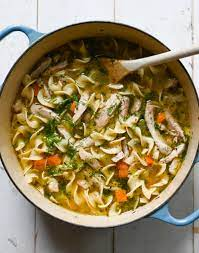

Basic Chicken Noodle Soup Recipe

This is a basic chicken noodle soup recipe. Feel free to zhuzh it up, or modify it to your taste.
Ingredients:
- 1/4 lb. carrots
- 1/4 lb. celery
- 1/4 lb. onion
- 1/2 lb. chicken thighs
<1i> 1-2 quarts chicken stock
- 1/4 lb. pasta
- A few sprigs of parsley
- Salt and pepper
Directions:
- Preheat a 2 gallon pot, and large dice celery, carrots, and onion (roughly 1/4" cubes)
- Saute mis en place: onions, then carrots, then celery.
- While mis is sauteing, cut chicken into strips or cubes as desired. Anything larger than 1/8" is fine, anything smaller will disappear into the broth.
- Once mis is tender, throw in chicken stock. Top off with water if needed.
- Allow to come to a light boil, and reduce flame to a simmer; throw in chicken.
- Once the chicken is cooked through, salt and pepper to taste. We will need to re-salt later, but this helps season everything evenly, including the pasta.
- Add pasta. Pick parsley leaves and wash.
- Once pasta is tender, re-season and serve. Garnish with parsley leaves.